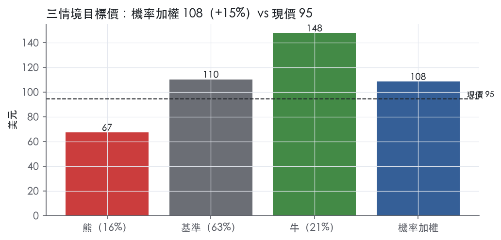
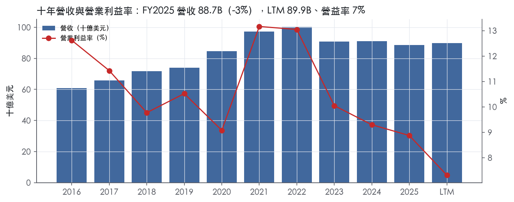
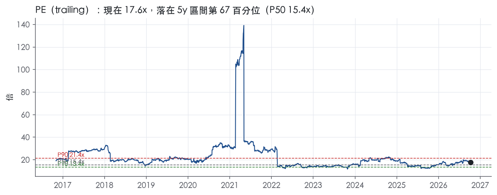
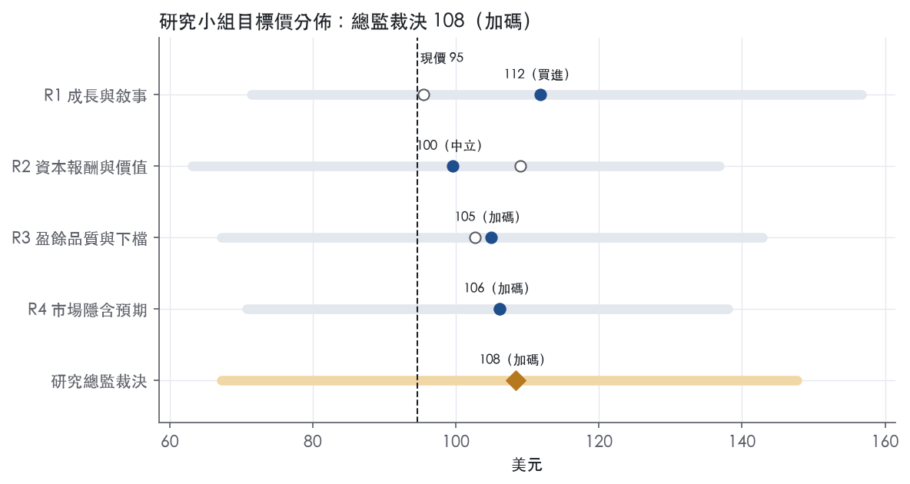
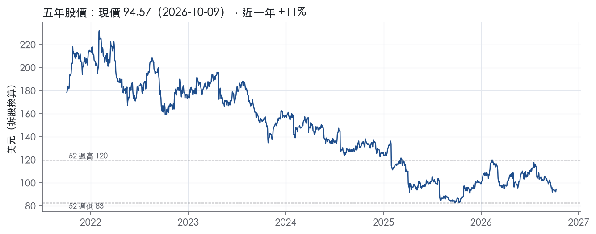

評等總表 › 工業 › UPS
利潤率修復未定價，槓桿折價已付，看多｜評等 加碼｜目標價 108
| 評等 | 加碼（邊界，鄰近買進） |
| 12 個月目標價 | 108 美元 |
| 現價 | 94.57 美元（2026-10-09） |
| 預期報酬 | 股價 +14.6%＋股息 6.9%＝總報酬 +21.5%；同業籃門檻 8.0%，超額 +13.5% |
| 估值方法 | P/E 16.4x，套在第 5–8 季的EPS（也就是一年後的未來四季） |
| 三情境 | 熊 67／基準 110／牛 148 |
| 研究流程 | 四位研究員兩輪辯論＋研究總監裁決 |
| 資料來源 | SEC EDGAR XBRL、Tiingo、FRED（全免費） |
利潤率修復未定價，槓桿折價已付，看多（研究總監裁決，四位研究員兩輪辯論後）
評等 加碼（邊界，鄰近買進）｜12 個月目標價 108 美元（總監三情境機率加權 111 與研究員中位數 106 各半）｜現價 94.57（2026-10-09）
預期報酬：股價 +14.6%＋股息 6.9%＝總報酬 +21.5%。同業籃門檻 8.0%，超額 +13.5%，離買進的分界不到三個百分點，屬邊界評等（落在其他級距的機率約四成）。
估值方法：P/E 16.4x，套在第 5–8 季的EPS（也就是一年後的未來四季）。三情境：熊 67（16%）／基準 110（63%）／牛 148（21%）。
什麼會讓研究總監改變看法：FY2026Q3 GAAP 營益率低於 8.0% 且公司揭露新一輪重組費用，或 2027 年初董事會凍結股利，我會把基準倍數降到前瞻帶 P10、熊機率上調；FY2027 指引調整後營益率達兩位數且 2026 下半年轉型費用接近零，我會把倍數移向市場持平 18.6x。
| 過去四季（實際，FY2026Q2） | 未來四季 | 第 5–8 季 | 第 9–12 季 | |
|---|---|---|---|---|
| 營收（B） | 89.9B | 93.1B | 96.8B | 100.7B |
| 營收成長 | -0.4% | 3.5% | 4.0% | 4.0% |
| 營業利益率 | 7.3% | 8.6% | 8.8% | 9.0% |
| EPS（美元） | 5.39 | 6.25 | 6.72 | 7.21 |
| EPS 成長 | -19.8% | 16.1% | 7.4% | 7.3% |
| 每股股息（美元） | 6.56 | 6.56 | 6.56 | 6.56 |
| P/E（現價） | 17.6x | 15.1x | 14.1x | 13.1x |
| 股息殖利率（現價） | 6.9% | 6.9% | 6.9% | 6.9% |
過去四季為申報數字；預測為研究總監的假設、程式計算。倍數與殖利率都用現價計算，用來看現價對應各期獲利的高低。
| 情境 | 機率（歷史） | 故事 | 未來四季營收成長 | 第 5–8 季營益率 | 倍數 | 目標價 | 股價漲跌 |
|---|---|---|---|---|---|---|---|
| 熊 | 16%（12%） | 對應風險表第 1 條（單價成長失速、量未回）與第 2 條（新一輪重組費用），FCF 付不起約 5.4B 股利，2027 年初減息，倍數跌出歷史帶；勞動合約（第 4 條）只反映在熊機率微調 | 0.0% | 7.5% | 13.0x | 67 | -28.9% |
| 基準 | 63%（68%） | Amazon 降量完成後單價與 Driver Choice 節省推動 GAAP 營益率回到 8.8%，轉型費用以 FY2025 量級持續，股利靠 FCF 加小幅舉債維持，倍數停在前瞻帶 P25 | 3.5% | 8.8% | 16.4x | 110 | 16.5% |
| 牛 | 21%（21%） | SMB 與醫療填補量能、單價維持高個位數，Driver Choice 節省完整落地且轉型費用歸零，GAAP 營益率回到 FY2023 的 10.0%，FCF 覆蓋股利，市場維持今天的前瞻倍數（R3 驅動，倍數依 R4 錨微調為市場持平 18.6x） | 4.5% | 10.0% | 18.6x | 148 | 56.1% |
目標價由程式依研究總監的驅動與倍數計算；機率由研究總監給定。括號內是歷史頻率：把這檔股票過去十年 12 個月報酬的波動形狀，置中在基準情境，結果落在各情境附近的比例。

四位研究員用不同方法各自估值，回應研究總監的質疑後交出第二輪，最後由總監逐點裁決。各研究員的主張見第七章，裁決理由見第八章，完整論證見《研究底稿》。
| 立場（一輪→二輪） | 加權目標價（一輪→二輪） | 評等（一輪→二輪） | 第二輪倍數 | 熊～牛目標價 | |
|---|---|---|---|---|---|
| R1 成長與敘事 | 中性→中性 | 95→112 | 中立→買進 | 16.4x | 71～157 |
| R2 資本報酬與價值 | 看多→中性 | 109→100 | 加碼→中立 | 15.0x | 63～137 |
| R3 盈餘品質與下檔 | 中性→看多 | 103→105 | 加碼→加碼 | 15.5x | 67～143 |
| R4 市場隱含預期 | 看多→看多 | 106→106 | 加碼→加碼 | 16.4x | 71～138 |
| 研究總監裁決 | 看多 | 108 | 加碼 | 16.4x | 67～148 |
目標價由程式依各自的驅動與倍數計算；評等＝機率加權總報酬 − 同業籃門檻。
UPS 是一家成立於1907年的全球包裹遞送與物流供應商，靠整合的空運與地面網路把包裹、文件、棧板貨物送到200多個國家與地區¹。2025年平均每日遞送2,080萬件包裹，全年累計52億件，總營收88.7B美元¹，對應資料包 FY2025 營收88.66B。客戶涵蓋從電商小賣家到醫療、B2B大型企業的全尺度貨主，公司策略明確把資源往健康照護、B2B、中小企業（SMB）、國際業務這幾個「願意為端到端解決方案付費」的客群傾斜¹。這是一家靠網路密度與規模經濟賺錢的物流公司，而不是單純的運輸外包商。
UPS 分三塊報告：美國境內包裹（U.S. Domestic Package）、國際包裹（International Package）、供應鏈解決方案（SCS）¹。美國境內包裹靠地面車隊覆蓋幾乎全美商業與住宅郵遞區號，地面網路每日約遞送1,500萬件包裹，多數一到三個工作日送達¹；2026年第一季該分部營收14,125M美元，年減2.3%，營業利潤515M美元（非GAAP調整後565M美元）²，第二季營收回升至14,930M美元，年增6.0%，但GAAP營業利潤僅16M美元（受轉型費用拖累），非GAAP調整後1,188M美元³。國際包裹靠EMEA、美洲（加拿大與拉丁美洲）、亞洲三塊地區網路運作，2026年Q1營收4,540M美元（年增3.8%）、營業利潤547M美元，Q2營收5,044M美元（年增12.5%）、營業利潤623M美元，兩季營業利潤率皆在12%上下²³。SCS涵蓋貨運代理（Forwarding）、物流（Logistics）、數位與其他業務；Forwarding是美國最大國內空運承運商之一，也是全球前列的無船承運人（NVOCC），做空運、海運、報關¹。SCS 2026年Q1營收2,537M美元（年減6.5%，主要因Mail Innovations量下滑），Q2營收2,860M美元（年增7.8%，主要靠貨運代理與物流含醫療成長）²³。全球醫療物流組合2025年營收超過11B美元，是公司重點擴張方向¹。三塊分部的規模排序很清楚：美國境內包裹是營收主力（單季約佔整體三分之二），國際包裹利潤率最高最穩，SCS體量最小但成長性與醞釀中的併購整合空間最大。
2025年服務160萬名託運客戶，每日遞送對象超過1,070萬人¹。單一客戶集中度是這家公司近兩年最大的結構變數：Amazon.com及其關係企業2025年佔合併營收約10.6%，幾乎全數落在美國境內包裹分部，公司策略是在2026年6月前把這個客戶的量較2024年水準砍超過50%¹。通路上公司靠UPS Access Points、The UPS Store、投遞箱、司機直收等多元觸點提供取件服務，並在約150個國家提供退貨服務¹。地面空運主樞紐在肯塔基州路易維爾，國際空運樞紐分布在德國、中國、香港、加拿大與佛羅里達（服務拉美與加勒比）¹。2025年12月公司與USPS簽約，自2026年起由USPS支援Ground Saver與Mail Innovations部分量的最終一哩配送，目的是更具成本效率地服務這些較低毛利的量¹。Amazon降量策略短期是營收與量能的逆風，但對毛利結構是正面的，因為被砍掉的量本來就是低單價貨。
2025年Q3營收21.41B美元，年減3.7%，營業利潤率8.4%（dv/is 資料包）；Q4營收24.48B美元，年減3.2%，營業利潤率回升至10.5%，EPS 2.11（系列）。進入2026年，Q1是轉型執行的關鍵期：consolidated營收21.2B美元，GAAP營業利潤率6.0%、非GAAP調整後6.2%，GAAP稀釋EPS 1.02美元、非GAAP調整後1.07美元，GAAP結果含稅後轉型費用42M美元（每股0.05美元）²。管理層當時表示「第一季是critical transition period」，並預期第二季起回到營收與營業利潤成長、調整後營業利益率擴張²；全年指引維持營收約89.7B美元、非GAAP調整後營業利益率約9.6%²。Q2如期轉強：consolidated營收22.8B美元，GAAP營業利潤率4.1%（因Driver Choice Program員工遣散費導致稅後轉型費用891M美元、每股1.05美元）、非GAAP調整後營業利潤率9.2%，GAAP稀釋EPS 0.71美元、非GAAP調整後1.76美元³。CEO Carol Tomé稱Amazon降量與網路重構計畫「successfully completed... as designed」，並上調全年指引：consolidated營收約91.2B美元、非GAAP調整後營業利潤目標約8.65B美元、非GAAP調整後稀釋EPS約7.22美元，同時確認資本支出約3.0B美元、股息支出約5.4B美元、有效稅率約23.0%³。資料包LTM（至FY2026Q2）營收89.93B美元、EBITDA 9.50B美元、FCF 5.46B美元。這四季的故事是：先吞一次性轉型/遣散成本的苦藥，再靠Amazon降量後的網路效率與高單價業務組合驗證毛利率回升。
公司自稱策略是「Customer First, People Led, Innovation Driven」，核心是把資源往健康照護、B2B、中小企業（SMB）、國際業務這些願意為端到端解決方案付費的客群傾斜¹。2025年SMB滲透率提升至美國總量的30%以上（較2024年成長），並完成Frigo-Trans與Andlauer Healthcare Group（AHG）兩筆併購，擴大冷鏈醫療物流能力，目標是成為全球第一大複雜醫療物流供應商¹。技術面公司強調從「scanning網路」轉向「sensing網路」，透過Smart Package Smart Facility與RFID技術優化網路流量，2025年已將RFID標籤延伸至5,500家UPS Store並完成美國貨車RFID讀取器安裝¹。公司列出的競爭優勢包括：業界最廣的整合空陸網路、超過200個國家與地區的全球布局、尖端技術（含AI應用於自動代理與客製化定價）、品牌權益、長期客戶關係與財務實力¹。轉型策略方面，公司明確劃分三個已執行或接近完成的計畫：Transformation 2.0與Fit to Serve已於2025年完成，Network Reconfiguration and Efficiency Reimagined（Network of the Future的延伸）則配合Amazon降量持續推動自動化與分揀整併³。
判斷：UPS正處於「主動砍低毛利量、換取結構性利潤率回升」的轉折尾聲，Q2的營收與調整後營業利益雙成長、全年指引連續兩季上修，是這個策略初步驗證的訊號。但GAAP層面每季仍被轉型費用與遣散成本干擾，要等這些一次性項目完全出清才能看清楚真實的營業槓桿。健康照護與SMB兩條線的併購與滲透率數據，是觀察這家公司能否擺脫「Amazon依賴症」的最直接指標。

UPS 的護城河評級為「窄」，趨勢「變窄」。理由是它的空陸整合網路具備規模與密度優勢，有把握讓 ROIC 在未來 5 年以上維持在資本成本之上。但 ROIC 已從高點一路下滑到十年最低，主要客戶在縮量，部分末端配送轉交 USPS，勞動成本又被工會合約鎖定，所以我們沒有把握這個優勢能延續 10 年以上。
UPS 的優勢來自效率規模與成本優勢，無形資產與轉換成本只提供次要支撐，網路效應沒有證據，不列入。
效率規模：公司認為自己的整合全球空陸網路是業界最廣的¹。地面車隊覆蓋美國本土幾乎所有商業與住宅郵遞區號¹。2025 年日均遞送 20.8 million 件包裹，全年 5.2 billion 件¹。這種覆蓋密度的網路要靠數十年資本累積才建得起來，新進者在全國範圍內複製的經濟性很低，市場因此只容得下少數全國性業者。
成本優勢：除非服務承諾另有要求，所有包裹都走同一個全球網路¹。公司稱此網路提供獨特的營運與資本效率¹。空運以路易維爾為主樞紐，設計上用較少、較大、較省油的機隊處理包裹，壓低成本¹。單一網路攤提固定成本，是 UPS 單件成本低於區域型業者的主要原因。
無形資產（授權與品牌）：公司持有 DOT 授予的國際航權¹。美國航空公司的國際營運權通常取決於雙邊協定或互惠原則¹。航權屬於稀缺授權，這構成國際快遞的進入門檻。品牌權益也被公司列為競爭優勢¹，但我們看不到能證明品牌帶來定價溢價的數字，所以只把它當作輔助。
轉換成本：Digital Access Program 把 UPS 的出貨方案直接嵌入主要電商平台¹。客戶也可以把 UPS 功能整合進自己的配銷通路¹。醫療冷鏈業務 2025 年營收超過 11B 美元¹，這類業務的合規與溫控驗證會提高換供應商的成本。整體而言，一般小包裹客戶的轉換成本仍然偏低，這項優勢集中在 B2B 與醫療客群。
ROIC 長期高於資本成本這一點成立，但趨勢明顯惡化，這是我們把評級定為「窄」而非「寬」的主因。
ROIC 十年平均 27.7%，比資本成本代理值 10.2% 高出 17.5%。有資料的 9 年中，9 年都高於資本成本。這支持「優勢真實存在」的判斷。
衝突點在趨勢。ROIC 最新值 18.5% 就是十年最低值，從 FY2021 的 44.6%一路降到 FY2022 的 35.5%、FY2023 的 21.9%、FY2024 的 20.2%、FY2025 的 18.5%（–FY2025）。營業利益率最新 8.9% 也是十年最低值，十年平均為 10.8%。FY2026Q2 單季營益率只剩 4.1%，主因是遣散相關的轉型費用。
營益率標準差只有 1.6%，代表利潤率在景氣循環中相對穩定，這一點符合護城河特徵。ROIC 標準差 7.8%偏大，波動主要來自 FY2021 疫情期間包裹量暴增的異常高點，不應拿它當常態基準。FCF 利潤率標準差 4.4%、最低 -5.7%，FY2017 的 FCF 為 -3.75B，顯示現金流受資本支出週期影響大。ROE 十年平均 166.0%、標準差 200.9%，這是低股東權益基數造成的失真，不能作為護城河證據。
我們維持「窄」而不下修到「無」，因為即使在最低點，18.5% 的 ROIC 仍高於 10.2% 的資本成本，緩衝空間足夠撐過 5 年。
最大的侵蝕來源是勞動成本僵固與量能流失，兩者都會直接削弱密度經濟。
勞動成本：美國員工近 80% 由工會代表¹。與 Teamsters 的全國主合約到 2028 年 7 月 31 日才到期¹。在合約期間，量能下滑時人力成本難以同步調降，固定成本攤提會惡化。
量能流失：Amazon 2025 年約占合併營收 10.6%¹。公司策略是在 2026 年 6 月前把該客戶的量從 2024 年水準砍掉超過 50%¹。量能縮減會稀釋網路密度，而密度正是成本優勢的根源。如果該客戶持續自建配送網路，它就從客戶變成直接競爭者。
住宅末端失守：自 2026 年起，部分 Ground Saver 與 Mail Innovations 的最終一哩配送改由 USPS 支援¹。這等於公司承認，在低密度、輕量的住宅件上，自己的網路不具成本優勢。
競爭面廣：公司與眾多地方、區域、全國及國際物流業者以及國家郵政服務競爭¹。營收成長最新為 -2.6%，十年平均為 4.5%。
資本成本上升：10 年期公債殖利率為 5.22，推高了資本成本代理值，ROIC 與資本成本之間的利差正從兩端同時收窄。
目標倍數相對同業應該持平，不給溢價。理由是 ROIC 雖然仍高於資本成本，但已降到十年最低，而且趨勢向下，這不足以支撐溢價倍數的持續期間。現在 EV/EBITDA 10.6x 剛好落在 5 年中位數 10.6x，我們不建議以 10 年中位數 11.5x作為回歸目標，除非 ROIC 止跌回升獲得驗證。
| 指標 | 最新 | 十年平均 | 標準差 | 最低 | 最高 |
|---|---|---|---|---|---|
| ROIC | 18.5% | 27.7% | 7.8% | 18.5% | 44.6% |
| 營業利益率 | 8.9% | 10.8% | 1.6% | 8.9% | 13.2% |
| FCF 利潤率 | 5.4% | 5.6% | 4.4% | -5.7% | 11.1% |
| ROE | 33.8% | 166.0% | 200.9% | 33.8% | 701.2% |
程式計算。資本成本代理值（10 年債＋5%）：10.2%；ROIC 平均減資本成本：17.5%；ROIC 有資料的 9 年中，高於資本成本 9 年。
現金轉換與應計比率十年一致健康，顯示盈餘不是靠會計灌出來的；但淨負債／EBITDA 已從三年均值 1.45x、十年均值 1.50x 爬升到 LTM 2.09x，利息保障倍數同期從 9.72x 掉到 6.01x，加上 2026Q2 出現一次性遣散費重壓 GAAP 獲利，顯示盈餘「品質」沒問題，但「可持續性與槓桿餘裕」正在收斂，值得打一點折扣。
現金持續跟上，甚至超前盈餘。LTM 營業現金流／淨利 1.94x、近三年均值 1.60x、十年均值 2.18x，全部落在綠燈區，代表報表淨利有實際現金流入支撐，不是應收帳款堆出來的紙上利潤。LTM 自由現金流／淨利 1.19x，扣掉資本支出後仍優於三年均值 0.90x 與十年均值 1.02x，顯示資本支出壓力沒有侵蝕自由現金流品質。應計比率 LTM 為 -6.0%，近三年與十年均值同為 -6.0%／-5.1%，持續負值表示盈餘的現金成分高於應計成分，是這張計分表裡最乾淨的一項。唯一需要留意的營運資金訊號是 FY2025 應收帳款成長減營收成長為 +5.8pp，10-K 原文提到「increased credit losses related to changes in accounts receivable composition and specific customer matters」⁴，代表應收品質變化與特定客戶信用損失增加，是應收帳款落後營收的實質原因，不是單純季節性雜訊。存貨成長減營收成長為 -7.9pp，沒有壓力。
FY2025 GAAP 稀釋 EPS 為 $6.56，非 GAAP 調整後為 $7.16，中間差 $0.60，主要來自四項：Transformation Strategy Costs 稅後 $452 million（每股 $0.53）、Goodwill and Asset Impairment Charges 稅後 $156 million（每股 $0.18，其中 $137 million 與 MD-11 機隊退役有關）、Net Loss on Divestiture $15 million（每股 $0.02）、以及所得稅備抵迴轉 $(109) million（每股 $(0.13)）⁴。這些調整裡，轉型重組費用與資產減損涉及實際裁員與機隊報廢，是真實的現金或資產成本，不應完全加回；稀釋股數年變動 LTM 轉為 +0.1%，三年均值卻是 -1.0%，顯示回購節奏在放緩、股數稀釋的燈號轉黃，與轉型支出排擠現金有關。值得注意的是，GAAP EPS 裡還包含 SCS 房地產售後回租利益帶來的每股 $0.30 貢獻，但公司並未把這筆一次性利得從非 GAAP 數字中剔除⁴，等於 $7.16 的調整後 EPS 仍含有一次性房地產收益，這個方向的「加回」對投資人不利，應在估值時再扣除。SBC／營收 LTM 僅 0.1%，三年與十年均值 0.1%／0.8%，全部是綠燈，股權薪酬對盈餘稀釋的影響微乎其微，不是需要擔心的項目。再看最新一季，2026Q2 GAAP 稀釋 EPS 僅 $0.71，非 GAAP 調整後達 $1.76，差距主要來自「Driver Choice Program」相關的稅後遣散費 $891 million（每股 $1.05）³，單季缺口遠大於全年平均，顯示轉型成本集中在特定季度爆發，會讓單季 GAAP 數字失真，須以年度化角度評估。
槓桿正在上升、回饋股東的強度超過盈餘本身。淨負債從 FY2024 的 14.97B 升至 FY2025 的 18.24B，再到最新 的 19.83B，淨負債／EBITDA LTM 達 2.09x，高於三年與十年均值的 1.45x／1.50x，燈號為黃。利息保障倍數 LTM 降到 6.01x，遠低於三年均值 9.72x 與十年均值 13.8x，主因是利息費用因平均負債餘額上升與資本化利息減少而增加⁴，疊加 2025 年利息費用年增 $151 million⁴，這是結構性而非一次性壓力。股利加回購占淨利 LTM 高達 118.4%，三年與十年均值同樣超過 100%，公司 2025 年以 $1.0 billion 股票回購加 $5.4 billion 股息、合計 $6.4 billion 回饋股東⁴，超過當年淨利，部分靠增加淨負債支撐，是舉債回饋的典型訊號。資本支出維持在可控水位，FY2025 資本支出／營收僅 4.2%，顯示資本配置的壓力來自股東回饋而非擴產投資。
淨負債／EBITDA 黃燈：真實但可解釋。槓桿攀升反映轉型成本與股東回饋排擠現金，加上營業利益因 Ground Saver 內部化、MD-11 退役等成本上升而壓縮 EBITDA 基期⁴，不是會計口徑問題，而是實質去槓桿空間縮小。
利息保障倍數黃燈：真實壓力。利息費用因負債餘額升高與資本化利息減少而增加⁴，與槓桿上升同步惡化，兩者互相印證，非單一期間雜訊。
稀釋股數年變動黃燈：可解釋為資本配置選擇，非盈餘品質問題。LTM 轉正代表回購腳步放緩，三年均值仍是淨減少，公司把現金優先用在股息與轉型支出上。
應收帳款成長超車營收黃燈（+5.8pp）：部分真實。10-K 明確點名特定客戶信用損失與應收組成變化⁴，加上 2025 年完成 Frigo-Trans、AHG 兩筆健康照護物流收購⁴，併購帶來的應收帳款入帳早於全年營收貢獻，屬一次性結構因素，但信用損失上升部分仍需後續追蹤，不能完全視為假警報。
程式標出的淨利率 FY2020→FY2021 跳動 +12pp：一次性、歷史性，非目前盈餘品質疑慮。該期為疫情後量能與運價同步回升帶動的異常高基期，距今已逾四年，與 LTM 現況無關，可視為解釋清楚的歷史紅旗。
估值應以 GAAP 盈餘為主軸，對非 GAAP 調整後數字打折使用，因為非 GAAP 口徑本身仍保留了 $0.30／股的一次性房地產售後回租利益而未剔除。現金品質無虞，不需要對現金流本身打折，但淨負債／EBITDA 2.09x 與利息保障倍數降到 6.01x意味著槓桿已從安全區域移向觀察區，若轉型支出或遣散費持續侵蝕 EBITDA，估值倍數不宜給在歷史中樞之上，應偏向 EV/EBITDA 5 年區間中位數 10.6x 以下。
| 項目 | LTM | 近三年 | 十年 | 燈號 | 規則 |
|---|---|---|---|---|---|
| 營業現金流／淨利 | 1.94x | 1.60x | 2.18x | 綠 | ≥1.00x 綠、<0.80x 紅 |
| 自由現金流／淨利 | 1.19x | 0.90x | 1.02x | 綠 | ≥0.90x 綠、<0.60x 紅 |
| 應計比率（(淨利−CFO)／平均總資產） | -6.0% | -5.1% | -6.0% | 綠 | ≤0.0% 綠、>5.0% 紅 |
| SBC／營收 | 0.1% | 0.1% | 0.8% | 綠 | ≤3.0% 綠、>8.0% 紅 |
| 淨負債／EBITDA | 2.09x | 1.45x | 1.50x | 黃 | ≤1.50x 綠、>3.00x 紅 |
| 利息保障倍數（營業利益／利息） | 6.01x | 9.72x | 13.8x | 黃 | ≥8.00x 綠、<3.00x 紅 |
| 稀釋股數年變動 | 0.1% | -1.0% | -0.5% | 黃 | ≤0.0% 綠、>3.0% 紅 |
| （股利＋回購）／淨利 | 118.4% | 110.2% | 113.1% | 綠 | ≥50.0% 綠、<0.0% 紅 |
| 應收帳款成長 − 營收成長（FY2025） | +5.8pp | — | — | 黃 | ≤5pp 綠、>15pp 紅 |
| 存貨成長 − 營收成長（FY2025） | -7.9pp | — | — | 綠 | ≤5pp 綠、>15pp 紅 |
程式計算；燈號以 LTM（無則近三年平均）判定。
| 風險 | 觸發指標（看什麼數字、在哪裡看） | 對 EPS 的影響方向與粗略幅度 | 未來 12 個月發生機率（高／中／低） | 出處 |
|---|---|---|---|---|
| 1. 美國境內包裹量能轉換失速（Amazon降量後SMB/醫療填補不足） | 每季8-K的U.S. Domestic Segment營收、revenue per piece、operating margin（Q2為6.0%營收成長、9.3%單價成長、非GAAP營益率8.0%） | 負向，大；單價成長若回落，營益率回吐空間大（Q1非GAAP營益率僅6.2%對比Q2的8.0%） | 中 | ³² |
| 2. 轉型重組一次性費用持續侵蝕GAAP EPS | 每季8-K揭露的「after-tax transformation charges」金額與每股影響 | 負向，中～大；Q2已達891M美元、每股1.05美元，Q1為42M美元、每股0.05美元 | 中 | ³² |
| 3. 燃油與能源價格波動、附加費轉嫁失靈 | 柴油/航空燃油現貨價、公司fuel surcharge收入線（財報補充資料） | 負向，方向明確、幅度「大」；公司自承「若無法維持或提高燃油附加費，較高燃油成本將重大不利影響營運結果」 | 中 | 10-K 年報 FY2025 Item 1A（風險因素） |
| 4. 工會合約到期與罷工／怠工風險 | Teamsters Local 2727機械工合約2026-11-01可修訂、IPA飛行員合約2025-09-01起可修訂（已過期待談）、下次Teamsters全國主合約2028-07-31到期 | 負向，方向明確、幅度「大」（公司稱罷工可能造成客戶永久流失） | 低～中 | ¹⁵ |
| 5. 關稅／貿易政策不確定性拖累國際包裹量 | International Segment營收與量（8-K）、美國關稅政策公告 | 負向，方向明確，幅度「中」；Q2國際段營收年增12.5%主要靠單價（+18.9%）而非量，顯示量能本身脆弱 | 中 | ³⁵ |
風險一：美國境內包裹量能轉換失速。 這是五條裡影響最大也最可被監測的一條。公司主動把Amazon這個佔2025年合併營收10.6%的最大客戶降量超過50%（以2024年水準為基準，目標2026年6月前完成）¹，CEO在2026年Q2法說中稱此「glide down」已「successfully completed... as designed」³。但Q1與Q2的數字顯示轉換過程本身波動很大：Q1 GAAP營業利潤率僅6.0%、非GAAP調整後6.2%²，Q2 GAAP營業利潤率因遣散費用骤降至0.1%，但非GAAP調整後回升至8.0%，營收成長6.0%主要靠單價成長9.3%、而非量能成長³。換句話說，目前的獲利改善高度依賴「單價」而非「量」，一旦SMB滲透率成長或醫療物流擴張放緩，單價優勢消失，營益率會立刻反映在下一季8-K。
風險二：轉型重組費用持續侵蝕GAAP EPS。 公司已明確告知Q2的891M美元稅後轉型費用主要來自「最近完成的Driver Choice Program」相關的員工遣散成本，每股影響1.05美元³，Q1也有42M美元稅後轉型費用、每股0.05美元²。管理層的敘事是這些費用屬於一次性，2026年下半年起GAAP與非GAAP的缺口應該收斂，但10-K本身也承認「Network Reconfiguration and Efficiency Reimagined initiatives」仍在持續推動設施與人力整併⁵，若Driver Choice之後還有新一輪的重組動作，GAAP EPS的波動性會比目前市場假設的更久。
風險三：燃油與能源價格波動。 公司直接承認「若無法維持或提高燃油附加費，較高燃油成本將重大不利影響營運結果」，且即使附加費轉嫁成功，過高的燃油附加費本身也會把客戶推向較低單價產品或直接減量⁵。這條風險的觸發指標非常具體（柴油、航空燃油現貨價）且每月可觀測，符合「可監測」的要求。目前資料包沒有附加費收入的獨立數字，故此處只能寫方向與「大」，不編造百分比。
風險四：工會合約到期與罷工風險。 公司近80%的美國員工受工會代表，國家主合約雖已延至2028年7月31日到期¹，但約2,000名飛機機械師的Teamsters Local 2727合約將於2026年11月1日可修訂¹，約3,400名飛行員的IPA合約已於2025年9月1日起可修訂但看來尚未重新談定¹。10-K直接點名「罷工、怠工或停工可能重大不利影響我們」且「客戶過去曾、未來也可能因此永久流失」⁵。這條在過去12個月沒有爆發的紀錄，機率評「低～中」，但一旦發生對EPS與股價的衝擊會非常直接（旺季物流中斷）。
風險五：關稅與貿易政策不確定性。 10-K把「全球貿易政策變化，包括關稅政策的制定與調整」列為影響經營成本結構的既有與持續風險⁵，且前瞻聲明單獨點名「新或增加的關稅」是可能導致實際結果偏離預期的因子³。國際包裹段Q2營收年增12.5%，但主要靠單價成長18.9%，量能表現相對疲弱³，顯示跨境需求本身對關稅、貿易政策消息面高度敏感。
1. USPS最終一哩合作案的執行風險。 公司在2025年12月與USPS簽約，自2026年起由USPS承接Ground Saver與Mail Innovations部分量的最終一哩配送，目的是「更具成本效率地服務這些較低毛利的量」¹。10-K風險章完全沒有把這個合作案本身列為獨立風險項，但這是一個全新的、對外部承運商的依賴關係——若USPS服務品質或時效出問題，UPS的品牌與既有客戶體驗會被拖累，而這個風險點不在現有的「客戶集中度」或「競爭」章節裡被討論。
2. 非GAAP與GAAP指引的落差擴大，可能掩蓋真實的經營槓桿拐點。 公司全年指引聚焦在非GAAP調整後營業利潤（約8.65B美元）與非GAAP調整後稀釋EPS（約7.22美元）³，但GAAP層面Q1、Q2都因轉型費用大幅偏離（Q2 GAAP稀釋EPS僅0.71美元 vs 非GAAP1.76美元）³。10-K風險章沒有把「調整項目本身可能持續存在、而非真正一次性」列為獨立風險，但若轉型重組是分階段推進而非單次事件，市場用非GAAP倍數給的估值可能系統性高估了UPS未來的真實現金獲利能力。
現價 94.57 對應 trailing（過去四季）P/E 17.6x、EV/EBITDA 10.6x、EV/EBITA —、EV/Sales 1.1x、FCF 殖利率 6.8%。主要估值倍數 P/E 現在 17.6x，落在5 年區間第 67 百分位（P10／P50／P90 = 13.4x／15.4x／21.4x）。

把程式的機械基準預測放到現價下，市場付的前瞻倍數是：P/E（未來四季） 18.6x、P/E（第 5–8 季） 17.9x。反推 DCF 顯示市價隱含未來五年營收年成長 7.1%（WACC 9.0%、終值成長 3.0%、FCF 利潤率 5.1%，SBC 不加回）。
| 倍數 | 現在 | 5 年 P10 | 5 年 P50 | 5 年 P90 | 現在分位 | 全期 P50 |
|---|---|---|---|---|---|---|
| P/E | 17.6x | 13.4x | 15.4x | 21.4x | 66.9% | 19.4x |
| EV/EBITDA | 10.6x | 8.9x | 10.6x | 12.7x | 48.3% | 11.5x |
| EV/EBIT | 15.3x | 11.6x | 13.8x | 17.2x | 68.8% | 15.5x |
| EV/Sales | 1.1x | 1.1x | 1.5x | 1.9x | 12.4% | 1.6x |
| P/S | 0.9x | 0.9x | 1.4x | 1.8x | 7.3% | 1.4x |
| P/FCF | 14.7x | 14.7x | 20.3x | 24.6x | 10.4% | 21.3x |
trailing 倍數（股價 ÷ 過去四季）；分位以每個交易日計算。
同業籃：SFWL, FLX, HXHX, TOPP, ETS（SIC 4210 同業 8 家中，CY2025 營收最接近的 5 家）。評等門檻 —：同業「倍數不變下持有一年」的隱含報酬中位數（＝ FCF 殖利率 ×(1＋g)＋g，g 為 5 年營收年複合成長並夾在 −2%～8%），每家夾在 0～15%、P/E 低於 5 倍視為資料可疑而排除，中位數再限制在 10 年債到 10 年債＋5% 之間；排除：SFWL（隱含報酬算不出來）、FLX（隱含報酬算不出來）、HXHX（隱含報酬算不出來）、TOPP（隱含報酬算不出來）、ETS（隱含報酬算不出來）。
| 代號 | 市值 | 5 年營收 CAGR | 營益率 | ROIC | P/E | 5 年 P/E 中位數 | EV/EBITDA | P/FCF | 隱含報酬 |
|---|---|---|---|---|---|---|---|---|---|
| UPS | 80.5B | 0.9% | 7.3% | 18.5% | 17.6x | 15.4x | 10.6x | 14.7x | 7.8% |
| SFWL | — | 14.8% | — | 11.7% | — | — | — | — | — |
| FLX | — | -47.8% | — | — | — | — | — | — | — |
| HXHX | — | 4.5% | — | — | — | — | — | — | — |
| TOPP | 0.0B | -4.2% | -36.7% | -139.0% | — | — | — | — | — |
| ETS | 0.0B | — | -179.0% | — | — | — | — | — | — |
| 同業中位數 | 0.1% | -107.9% | -63.7% | — | — | — | — | — |
全部 trailing，程式以各公司 SEC XBRL 與 Tiingo 行情計算；第一列為本檔。
事後實現前瞻倍數帶（P/E，2018-08-17..2025-08-15）：P10／P50／P90 = 15.1x／19.8x／25.8x。它是每個交易日的股價除以之後四季實際實現的指標；一年後，今天的第 5–8 季正是那時的未來四季，所以這條帶是 12 個月目標價的同口徑倍數。因為用的是事後實際而非當時預期，過去成長超乎預期的公司這條帶會偏低。
程式的機械基準（成長率從過去四季年增率三年收斂到 6%、利潤率持平）用 事後實現前瞻 P/E P50 估值得到 105（11.0%），市場現行前瞻倍數（現價 ÷ 基準 未來四季指標）一年後持平，套在基準 第 5–8 季指標得到 98。這兩個數字只是參考點，不是本報告的目標價；研究員對這個定價的回應在第七章。
下表是每位研究員第一輪（各自獨立）與第二輪（回應研究總監的質疑後）的結果。目標價全由程式依各自的假設計算。
| 立場（一輪→二輪） | 加權目標價（一輪→二輪） | 評等（一輪→二輪） | 第二輪倍數 | 熊～牛目標價 | |
|---|---|---|---|---|---|
| R1 成長與敘事 | 中性→中性 | 95→112 | 中立→買進 | 16.4x | 71～157 |
| R2 資本報酬與價值 | 看多→中性 | 109→100 | 加碼→中立 | 15.0x | 63～137 |
| R3 盈餘品質與下檔 | 中性→看多 | 103→105 | 加碼→加碼 | 15.5x | 67～143 |
| R4 市場隱含預期 | 看多→看多 | 106→106 | 加碼→加碼 | 16.4x | 71～138 |
| 研究總監裁決 | 看多 | 108 | 加碼 | 16.4x | 67～148 |
目標價由程式依各自的驅動與倍數計算；評等＝機率加權總報酬 − 同業籃門檻。
分歧度：第一輪 加權目標價 95～109（區間＝現價的 14%）· 倍數 15.4～16.4x · 立場 中性×2、看多×2；第二輪 加權目標價 100～112（區間＝現價的 13%）· 倍數 15～16.4x · 立場 中性×2、看多×2。

| 研究員 | 第二輪主張 | 堅持的理由 |
|---|---|---|
| R1 成長與敘事 | 立場中性，目標倍數 16.4x P/E，假設轉型費用逐年減半。 | 熊情境機率高於牛，理由是勞動合約重談與槓桿升高。 |
| R2 資本報酬與價值 | 立場中性，目標倍數 15.0x P/E，取過去實現前瞻倍數的下緣。 | 基準情境的股利仍靠舉債支付，倍數應再打折。 |
| R3 盈餘品質與下檔 | 看多，目標倍數 15.5x P/E，報酬主要來自股息與費用退潮。 | 轉型費用會年年出現，估值只認 GAAP EPS。 |
| R4 市場隱含預期 | 看多，目標倍數 16.4x P/E，認為市場低估營益率修復。 | 熊情境主因是飛行員與機師合約重談推高成本。 |
每位研究員的逐條回應與完整論證見《研究底稿》（UPS_研究底稿_2026-10-13.docx）。
| 分歧點 | R1 成長 | R2 價值 | R3 品質 | R4 預期 | 什麼資料會分出勝負 |
|---|---|---|---|---|---|
| 1. Q5–Q8 GAAP 營益率（op_margin_y2） | 9.0%，轉型費用減半 | 8.8%，扣售後回租利益後的常態 | 8.8%，費用以 FY2025 量級持續 | 8.6%，費用不減、調整後不再升 | FY2026Q3 GAAP 營益率（2026-11）；FY2027 指引調整後營益率（2027-02） |
| 2. 目標倍數（multiple） | 16.4x，前瞻帶 P25 | 15.0x，前瞻帶 P10，股利靠舉債 | 15.5x，P10–P25 | 16.4x，P25 扣個股槓桿風險 | FY2026 FCF 對約 5.4B 股利的覆蓋、年報淨負債／EBITDA（2027-02） |
| 3. 熊情境機制與倍數 | 13.5x，風險表第 4 條 | 12.5x，自訂減息機制 | 13x，風險表第 1＋2 條 | 14.0x，風險表第 4 條 | Q3 美國境內單件營收年增（2026-11）；Local 2727 合約 2026-11-01；2027 年初股利決議 |
| 4. 牛／熊機率順序 | 20／56／24，熊＞牛 | 19／63／18 | 20／63／17 | 22／58／20 | 程式歷史對照；勞動與槓桿是否真在十年樣本之外 |
| 5. 營收成長 y1／y2 | 3.5／4.0% | 3.0／3.5% | 3.0／3.5% | 3.5／4.0% | FY2026Q3 合併營收年增（2026-11）；FY2026 營收對指引約 91.2B |
分歧 1 → R3，8.6%／8.8%／9.0%。 調整後這一端：4 月指引全年調整後營益率約 9.6%²，7 月上修調整後營業利益至約 8.65B³；Q2 美國境內調整後營業利益 1,188M 對去年 982M、營收 14,930M 對 14,083M³，而 Driver Choice 是 Q2 才「recently completed」，節省到 Q5–Q8 才完整落地。GAAP 落差這一端：FY2025 轉型每股 0.53、減損 0.18，GAAP 又含每股 0.30 售後回租利益未從非 GAAP 剔除⁴；轉型活動「spanned several years」²，公司只給非 GAAP 指引正因無法預測費用³。R1 的 9.0% 要費用減半，沒有公司端證據；R4 的 8.6% 把調整後營益率凍在 2026 指引兩年、費用維持 FY2025 全額，但 FY2025 在降量進行中、含同樣費用的 GAAP 已是 8.9%，他自己的季度路徑也放 FY27Q2 於 8.5%。R3「調整後起點扣約 1 個百分點常態化費用、逐年小幅改善」與兩端證據都相容。
分歧 2 → R4，16.4x eps@q5_q8。 錨是事後實現前瞻 P/E 帶 P25（P10／P25／P50＝15.1x／16.4x／19.8x）。不付 P50 全是個股理由：（一）R1、R2 從不同座位看出 P50 偏高——2018–19 起點實現 FY2020 的 1.54、2022–25 起點實現 7.80 到 6.56（FY2025），只有 2020–21 起點實現 14.68那段偏低；（二）淨負債／EBITDA 2.09x 對十年 1.50x、利息保障 6.01x 對 13.8x、回饋占淨利 118.4%（財務體質章量化底稿），帶期間沒出現過；（三）護城河窄且變窄，ROIC 18.5% 十年最低，不給溢價。不下到 15.0x／15.5x：R2 的折價針對 NTM FCF 付不起約 5.4B 股利（1.19B、FY2026Q2 0.17B），但倍數套在 Q5–Q8，在他自己 8.8% 營益率、3.5% 資本支出的驅動下到那時 FCF 已接近股利——NTM 缺口是熊情境的機制，不該再壓基準倍數；R3 低於 P25 的原理由是退休金扭曲，他已自降為假設，剩下的槓桿證據和 P25 用的是同一份。原則 7：16.4x 低於市場持平 18.6x，但 18.6x 是對機械基準 NTM EPS 5.09（營益率 7.3% 持平）付的，我們 NTM 營益率 8.6%，同一個現價對應的前瞻倍數會低於 18.6x（程式交件後可見），16.4x 不是對修復後盈餘的擴張。四位現在都沒用利率壓倍數；R3 以 10 年債 5.22%主張門檻應為 10% 是假設，門檻由程式設定，不採。
分歧 3 → R3，13x，風險表第 1＋2 條。 熊的脊椎應是風險章排第一、機率「中」、最可監測的那條：單件營收成長失速（Q1 6.5%²、Q2 9.3%³）加第 2 條重組費用反覆，FCF 跌破股利，董事會 2027 年初被迫二選一。減息在帶期間沒發生過，13x 落在前瞻帶 P10 與 trailing 5 年 P10 13.4x之下合理。R2 的 12.5x 機制相同但沒有風險表對應（他看不到風險章），更深沒有額外觸發點；R1、R4 以第 4 條為脊椎，但風險表評它「低～中」，R1 自己也說《鐵路勞工法》下罷工機率低，約 2,000 名機械師、3,400 名飛行員¹撐不起熊情境——勞動放進熊機率的微調，不放進機制。
分歧 4 → own，21／63／16。 退回 R1 的熊＞牛。勞動理由：Teamsters 全國主合約到 2028-07-31 才到期¹，表示前一份是在十年樣本期內談成的，涵蓋近 80% 由工會代表的美國員工¹，規模遠大於這次，樣本不是沒見過勞動事件；槓桿理由已在 13x 熊倍數裡，再放進機率是重複計算（我對 R3 的 Q2，他已接受）。R2、R3、R4 都是牛≥熊，與程式歷史對照一致。本部 22 份報告全部熊＞牛，UPS 歷史相反，這是要修的偏誤。
分歧 5 → R1，3.5%／4.0%／4.0%。 Amazon 降量「successfully completed」³，2026 下半年對上 FY2025Q3、Q4 的 −3.7%、−3.2%（最近八季表）不再帶拖累；Q2 營收年增 7.6%，營收指引一季內從約 89.7B 上修到約 91.2B²。R2、R3 的 3.0／3.5% 靠 5 年 CAGR 0.9%（同業表），那段含主動砍量，是回頭看。y3 不取 R4 的 4.5%，沒有證據。此項對 Q5–Q8 EPS 影響小。
漂移：不退回任何人。 R1 +17.1% 幾乎全來自 G1 口徑修正（15.4x@ntm→16.4x@q5_q8），是我要求的，他的 y2／y3 營益率反而下修；但立場「中性」對評等「買進」沒有解釋，我以他的數字、不以他的標籤看待他。R2 −8.6%、靠攏 51% 剛過門檻，四條接受都附證據，且他第一輪看不到最近八季，FY2026Q1／Q2 的 FCF 對他是新證據。R3 +2.2% 來自我的 Q2、Q4-a；程式標他的 7.22、8.65 對不上來源是誤判，兩數在³。R4 未動。
目標倍數 16.4x，metric eps，horizon q5_q8。錨為事後實現前瞻 P/E 帶 P25；帶的口徑就是一年後的倍數乘之後四季，與 q5_q8 直接可比，不換算。同業表 5 家沒有可用倍數，門檻由程式以 8% 絕對值處理；相對同業依護城河章「持平、不給溢價」。交叉驗證：機械基準在 19.8x 時隱含 EV/EBITDA(Q5–Q8) 11.1x（程式表），16.4x 配更高 EBITDA 會落在 5 年 P50 10.6x之下，符合財務體質章「不高於歷史中樞」。
機率從歷史出發：兩端相對基準的距離與 R3、R4 第二輪的程式對照相近（R3 +39%／−35% → 歷史 20／65／16；R4 +30%／−33% → 22／61／17）；置中分布 ≥+10% 27%、≥+20% 18%，≤−10% 35%、≤−20% 14%。我給 21／63／16：牛取歷史，熊比歷史高約 1 個百分點（假設，程式會給精確值），理由是風險表第 4 條兩個落在窗內的日期——Local 2727 合約 2026-11-01 可修訂、IPA 合約自 2025-09-01 待談¹——幅度刻意小，因為減息與槓桿已在熊的價格裡。牛≥熊，與這檔股票的歷史一致。
市場對機械基準 NTM EPS 5.09（營益率 7.3% 持平）付 18.6x；我們的差距在盈餘不在倍數——NTM 營益率 8.6%、Q5–Q8 8.8%，驅動是降量完成後的單價與 Driver Choice 節省，而倍數 16.4x 反而低於 18.6x，槓桿折價已付掉。不論市場是用高倍數預付一部分修復、還是對修復後盈餘只付前瞻帶下緣，6.9% 股息率（快照）加盈餘修復的總報酬都高於 8% 門檻。立場看多，程式評等應為加碼或買進，一致；若加權後落在門檻附近，原因是總報酬裡股息占大半、資本利得端被 16.4x 的折價壓住，不是方向分歧。
現價 94.57 → 點估目標價 110 → 機率加權目標價 111 → 目標價 108，差距拆成五段：成長順延 +4 美元（市場現行倍數 18.6x 一年後持平、獲利照機械基準）；倍數差 -12 美元（總監倍數 16.4x vs 市場持平倍數 18.6x，同一機械基準預測）；盈餘差 +23 美元（總監預測的第 5–8 季EPS 0.0B vs 機械基準 0.0B，同一倍數）；情境不對稱 +1 美元（機率加權減點估）；研究小組平均 -3 美元（總監機率加權 111 與研究員第二輪中位數 106 各半）。各段相加等於目標價減現價。本階段未接賣方共識，差距以市場隱含預期為對照。
| 驅動 | 機械基準 | 研究總監 | 差異 |
|---|---|---|---|
| 未來四季營收成長 | 1.7% | 3.5% | +1.8 pp |
| 第 5–8 季營收成長 | 3.9% | 4.0% | +0.1 pp |
| 第 9–12 季營收成長 | 6.0% | 4.0% | -2.0 pp |
| 未來四季營益率 | 7.3% | 8.6% | +1.3 pp |
| 第 5–8 季營益率 | 7.3% | 8.8% | +1.5 pp |
| 第 9–12 季營益率 | 7.3% | 9.0% | +1.7 pp |
| D&A／營收 | 3.2% | 3.2% | ＝ |
| 資本支出／營收 | 3.8% | 3.5% | -0.3 pp |
| SBC／營收 | 0.1% | 0.1% | ＝ |
| 稅率 | 22.2% | 23.0% | +0.8 pp |
| 股數年變動 | 0.5% | 0.0% | -0.5 pp |
研究總監只寫偏移，未寫的沿用基準。
| 期 | 營收 | 成長 | 營益率 | 營業利益 | EBITDA | EBITA | 淨利 | EPS | FCF | 期末淨負債 |
|---|---|---|---|---|---|---|---|---|---|---|
| 未來四季 | 93.1B | 3.5% | 8.6% | 8.0B | 11.0B | 8.0B | 5.3B | 6.25 | 5.2B | 20.0B |
| 第 5–8 季 | 96.8B | 4.0% | 8.8% | 8.5B | 11.7B | 8.5B | 5.7B | 6.72 | 5.6B | 19.8B |
| 第 9–12 季 | 100.7B | 4.0% | 9.0% | 9.1B | 12.3B | 9.1B | 6.1B | 7.21 | 6.0B | 19.2B |
程式依上表的驅動計算；季度用最近四季季節性分攤；不含營運資金變動。
估值方法：P/E 16.4x，套在第 5–8 季的EPS（也就是一年後的未來四季）。研究總監目標倍數的錨：事後實現前瞻 P/E 帶 P25（P10／P25／P50＝15.1x／16.4x／19.8x）；P50 因 FY2020 低谷與 2022–25 盈餘下滑起點偏高，加上淨負債／EBITDA 2.09x、利息保障 6.01x、回饋占淨利 118.4% 在帶期之外，護城河窄不給溢價；低於市場持平 18.6x 是因 18.6x 以機械基準低谷 EPS 為分母。
計算：EPS（第 5–8 季） 6.72 × 16.4x → 點估目標價 110（16.5%）；隱含 P/E（未來四季）17.6x、P/E（第 5–8 季）16.4x、EV/EBITDA（第 5–8 季）9.8x、FCF 殖利率（第 5–8 季）6.0%。
總監三情境機率加權目標價 111，研究員第二輪中位數 106，兩者各半＝目標價 108；預期報酬 股價 +14.6%＋股息 6.9%＝總報酬 +21.5%；減評等門檻 8.0%（絕對門檻 8%（沒有同業籃資料））＝超額報酬 +13.5% → 評等 加碼（超額 >+15% 買進、+5～+15% 加碼、±5% 中立、−5～−15% 減碼、<−15% 賣出）。同一份資料重開研究小組，超額約有正負四個百分點的雜訊（一個標準差，二十檔實測）；以此估計，評等落在其他級距的機率約四成。超額離買進的分界不到三個百分點，應視為邊界評等。
| 情境 | 機率 | 未來四季成長 | 第 5–8 季成長 | 第 5–8 季營益率 | EPS（第 5–8 季） | 倍數 | 目標價 |
|---|---|---|---|---|---|---|---|
| 熊 | 16% | 0.0% | 1.0% | 7.5% | 5.17 | 13.0x | 67 |
| 基準 | 63% | 3.5% | 4.0% | 8.8% | 6.72 | 16.4x | 110 |
| 牛 | 21% | 4.5% | 5.0% | 10.0% | 7.94 | 18.6x | 148 |
| 主張 | 驗證日 | 看哪個數字 | 門檻 |
|---|---|---|---|
| FY2026Q3 GAAP 營業利益率不低於 8.0%，轉型費用退潮且單價撐住 | 2026-11-15 | >= 8.0% | |
| FY2026 自由現金流不低於 FY2025，股利覆蓋沒有惡化 | 2027-02-15 | >= 4.76B | |
| 2027 年初董事會維持每股季股利，不凍結不調降 | 2027-02-28 | 季度股利宣告每股金額（8-K／新聞稿） | >= 2026 年各季每股股利 |
| Q2 2026 遣散費移出 LTM 後，GAAP 營益率回到我們的 NTM 假設附近 | 2027-08-15 | >= 8.5% |
到期由程式結算（第 5 階段帳本）。
內文上標數字對應下列公司申報文件；未標上標的分析與判斷，是研究小組的觀點。報告中的每個數字都經程式逐一核對資料包或原文。
| 期 | 營收 | 成長 | 毛利率 | 營益率 | EBITDA | 淨利 | EPS | CFO | FCF | ROIC | 淨負債 | 稀釋股數 |
|---|---|---|---|---|---|---|---|---|---|---|---|---|
| FY2016 | 60.9B | — | — | 12.6% | 9.9B | 3.4B | 3.86 | 6.5B | 3.5B | — | 11.5B | 0.9B |
| FY2017 | 65.9B | 8.2% | — | 11.4% | 9.8B | 4.9B | 5.61 | 1.5B | -3.7B | 31.2% | 20.2B | 0.9B |
| FY2018 | 71.9B | 9.1% | — | 9.8% | 9.2B | 4.8B | 5.51 | 12.7B | 6.4B | 26.7% | 17.7B | 0.9B |
| FY2019 | 74.1B | 3.1% | — | 10.5% | 10.2B | 4.4B | 5.11 | 8.6B | 2.3B | 26.1% | 22.9B | 0.9B |
| FY2020 | 84.6B | 14.2% | — | 9.1% | 10.4B | 1.3B | 1.54 | 10.5B | 5.0B | 24.8% | 18.4B | 0.9B |
| FY2021 | 97.3B | 15.0% | — | 13.2% | 15.8B | 12.9B | 14.68 | 15.0B | 10.8B | 44.6% | 11.3B | 0.9B |
| FY2022 | 100.3B | 3.1% | — | 13.0% | 16.3B | 11.5B | 13.20 | 14.1B | 9.3B | 35.5% | 12.1B | 0.9B |
| FY2023 | 91.0B | -9.3% | — | 10.0% | 11.9B | 6.7B | 7.80 | 10.2B | 5.1B | 21.9% | 16.2B | 0.9B |
| FY2024 | 91.1B | 0.1% | — | 9.3% | 11.5B | 5.8B | 6.75 | 10.1B | 6.2B | 20.2% | 15.0B | 0.9B |
| FY2025 | 88.7B | -2.6% | — | 8.9% | 10.9B | 5.6B | 6.56 | 8.4B | 4.8B | 18.5% | 18.2B | 0.8B |
SEC XBRL；每股數據已依拆股換算到現在股數基準。EBITDA 空白 = 該年無形攤銷在 companyfacts 中缺 tag。
| 期 | 期末 | 推導 | 營收 | 毛利率 | 營益率 | EBITDA | 淨利 | EPS | CFO | FCF | 現金 | 總債務 |
|---|---|---|---|---|---|---|---|---|---|---|---|---|
| FY2023Q3 | 2023-09-30 | 21.1B | — | 6.4% | 2.2B | 1.1B | 1.31 | 2.2B | 0.9B | 4.3B | 21.1B | |
| FY2023Q4 | 2023-12-31 | Q4 | 24.9B | — | 9.9% | 2.8B | 1.6B | 1.87 | 2.4B | 0.4B | 3.2B | 22.3B |
| FY2024Q1 | 2024-03-31 | 21.7B | — | 7.4% | 2.5B | 1.1B | 1.30 | 3.3B | 2.3B | 4.3B | 20.0B | |
| FY2024Q2 | 2024-06-30 | 21.8B | — | 8.9% | 2.8B | 1.4B | 1.65 | 2.0B | 1.1B | 6.3B | 22.2B | |
| FY2024Q3 | 2024-09-30 | 22.2B | — | 8.9% | 2.9B | 1.5B | 1.80 | 1.5B | 0.7B | 5.9B | 21.9B | |
| FY2024Q4 | 2024-12-31 | Q4 | 25.3B | — | 11.6% | 3.2B | 1.7B | 2.01 | 3.3B | 2.2B | 6.1B | 21.3B |
| FY2025Q1 | 2025-03-31 | 21.5B | — | 7.7% | 2.4B | 1.2B | 1.40 | 2.3B | 1.4B | 4.8B | 21.4B | |
| FY2025Q2 | 2025-06-30 | 21.2B | — | 8.6% | 2.8B | 1.3B | 1.51 | 0.3B | -0.8B | 6.2B | 24.7B | |
| FY2025Q3 | 2025-09-30 | 21.4B | — | 8.4% | 2.7B | 1.3B | 1.55 | 2.5B | 1.5B | 6.8B | 24.8B | |
| FY2025Q4 | 2025-12-31 | Q4 | 24.5B | — | 10.5% | 2.8B | 1.8B | 2.11 | 3.3B | 2.6B | 5.9B | 24.1B |
| FY2026Q1 | 2026-03-31 | 21.2B | — | 6.0% | 2.1B | 0.9B | 1.02 | 2.2B | 1.2B | 5.8B | 24.4B | |
| FY2026Q2 | 2026-06-30 | 22.8B | — | 4.1% | 1.9B | 0.6B | 0.71 | 0.9B | 0.2B | 4.7B | 24.5B |
流量項目由 10-Q 的年初至今數拆成單季；Q4 = 年度 − 九個月。

本報告由 equity-desk 多代理系統產出，建置中版本，僅供內部研究與方法驗證，不構成投資建議。所有數字以 datapack.json 為準。